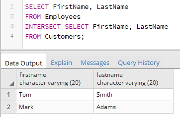

Вернуться на главную страницу →
Вернуться на главную страницу →
Пересечение множеств. INTERSECT
Оператор INTERSECT позволяет найти общие строки для двух выборок, то есть данный оператор выполняет операцию пересечения множеств. Для его использования применяется следующий формальный синтаксис:
Для примера возьмем таблицы из прошлой темы:
В таблице Customers хранятся все клиенты банка, а в таблице Employees - все его сотрудники. При этом сотрудники банка могут быть одновременно и клиентами этого банка, поэтому их данные могут храниться сразу в двух таблицах. Найдем всех сотрудников банка, которые одновременно являются его клиентами. То есть нам надо найти общие элементы двух выборок:
